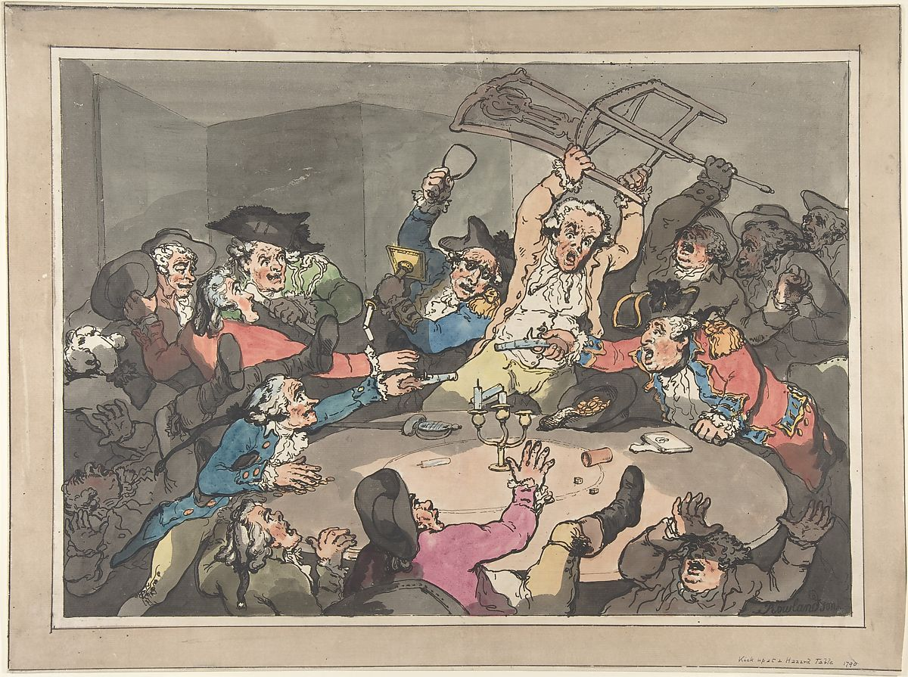
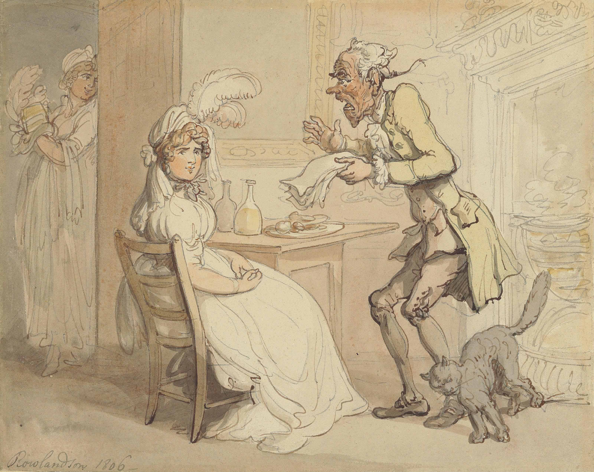
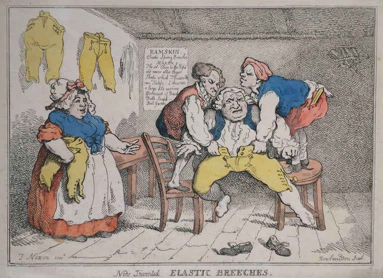
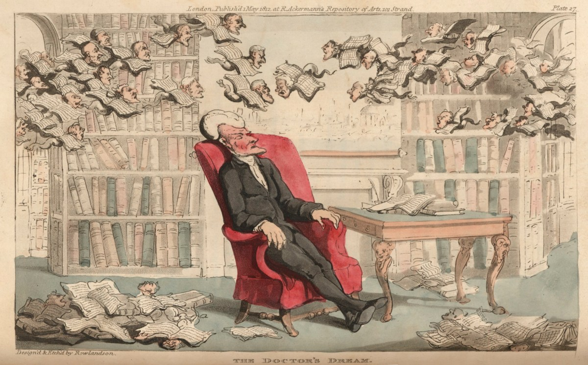
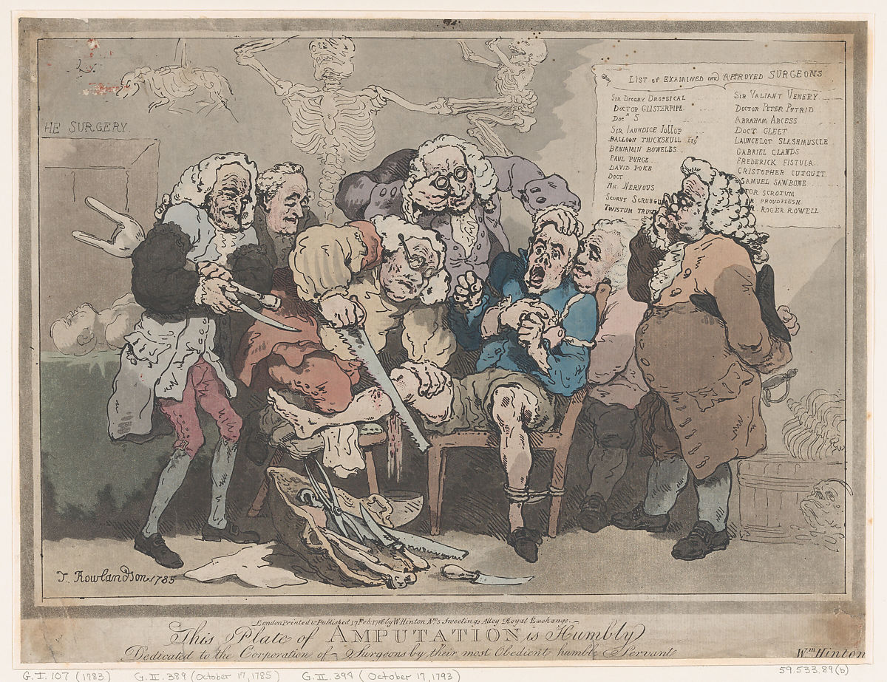
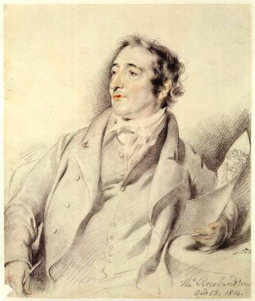
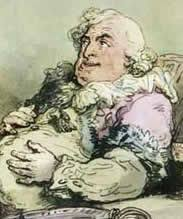

1. Thomas Rowlandson, A Kick-up at a Hazard Table, ca. 1787-1790, Media, Prints and multiples, Hand-colored etching and aquatint, 33.9" x 48.2"

2. Thomas Rowlandson, The New Bonnet, 1806, Pencil, pen and ink and watercolor, 9" x 11.25"

3. Thomas Rowlandson, New Invented Elastic Breeches, Etching, 9.125" x 12"

4. Thomas Rowlandson, The Doctor's Dreams, 1812, Hand colored etching with aquatint, 4.4" x 7.3"

5. Thomas Rowlandson, Amputation, 1786, Hand colored etching, 11" x 14.4"

